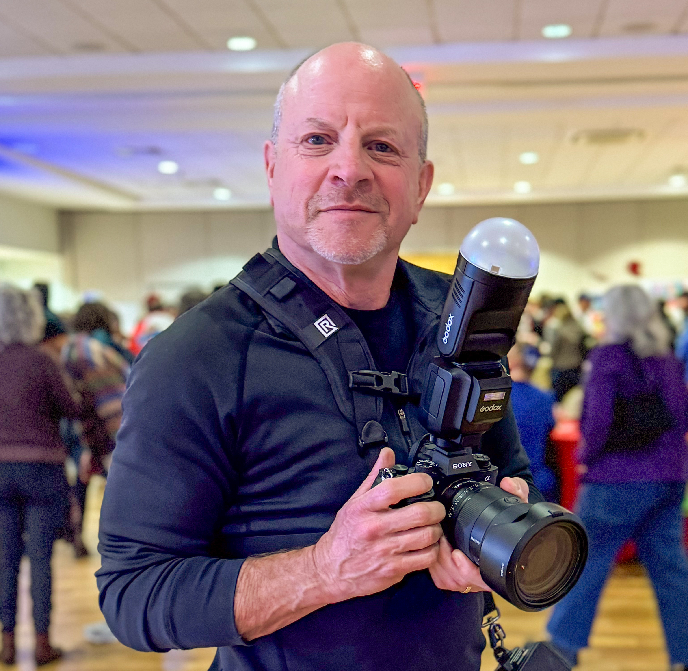

Steve Snyder
I photograph fundraisers, celebrations, music, and wildlife. Whatever I'm shooting, I'm after the same thing: an image that tells a story.
Based in Bethesda, Maryland, I photograph events throughout the Washington, D.C. area and wildlife worldwide.